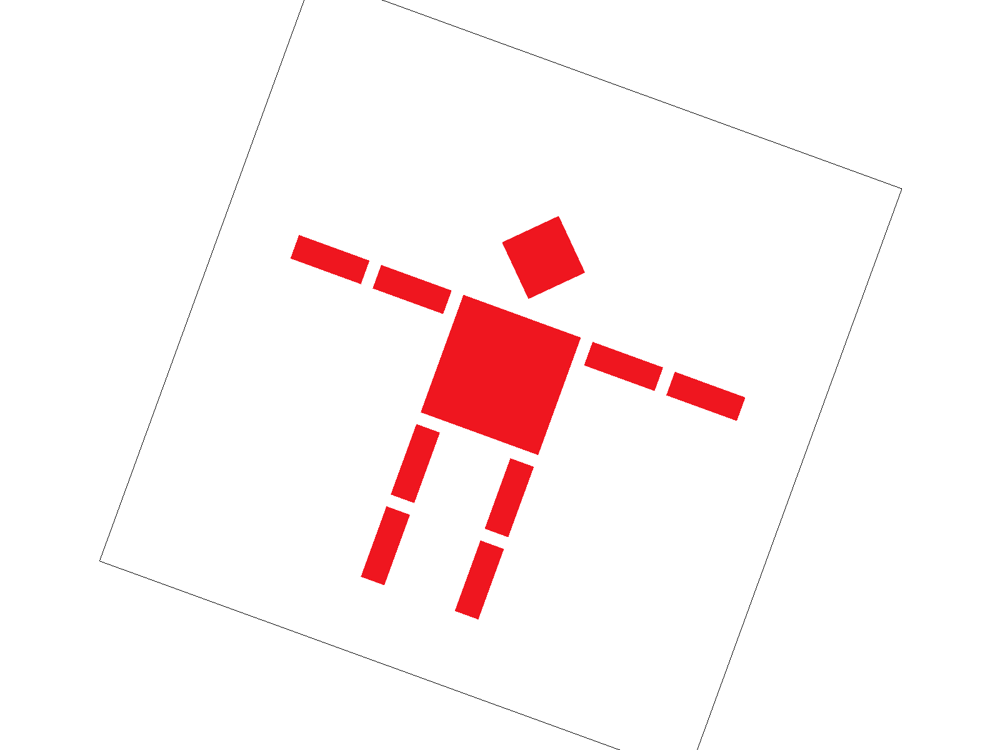
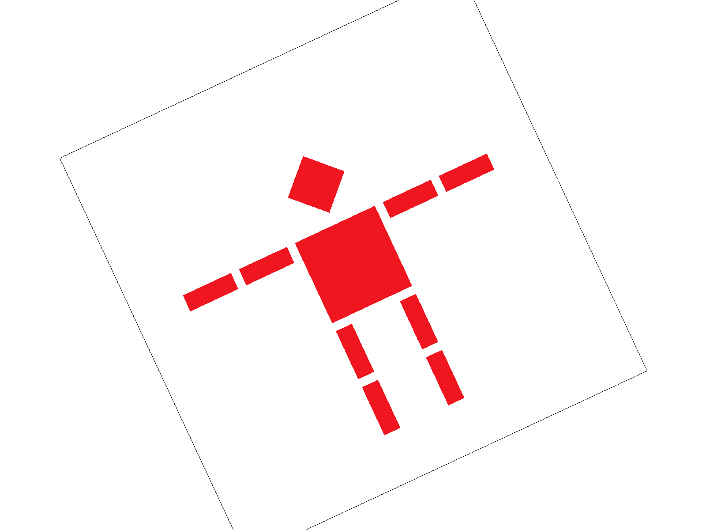
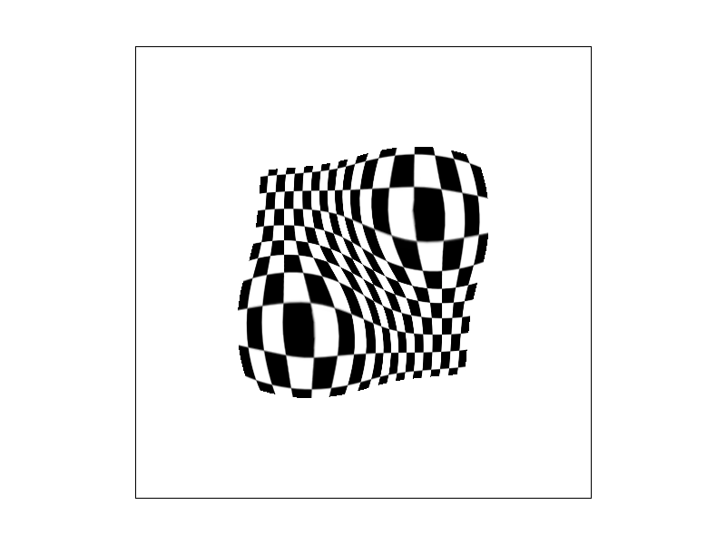
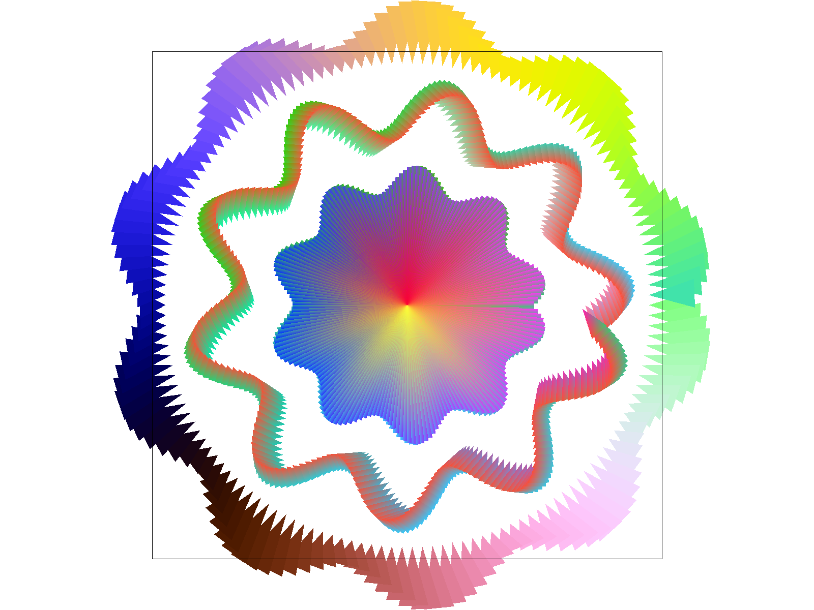

In this homework, I constructed a full software rasterization pipeline capable of rendering SVG scenes with
flat-shaded triangles, smoothly interpolated vertex colors, and texture-mapped surfaces. Beginning with a
half-space edge-function test in Task 1, I progressively extended the renderer by adding supersampling
antialiasing to reduce geometric jaggedness (Task 2), implementing affine transformations in homogeneous
coordinates for hierarchical modeling (Task 3), applying barycentric interpolation for attribute blending
(Task 4), incorporating nearest and bilinear UV-based texture reconstruction (Task 5), and finally
introducing mipmap-driven level sampling with trilinear filtering to address texture minification artifacts
(Task 6).
Two aspects of this assignment stood out to me. First, the power of incremental computation: by updating
edge-function values using constant additions across pixels instead of recomputing them from scratch, the
rasterization loop becomes extremely efficient. With bounding-box restriction and sign-consistency checks,
the per-pixel cost reduces to a small set of arithmetic operations. Second, the modular nature of
antialiasing strategies became clear. Supersampling mitigates geometric edge aliasing in screen space,
bilinear filtering smooths magnified texels in texture space, and mipmap level selection stabilizes minified
textures. Each technique addresses a distinct source of aliasing, yet they integrate seamlessly within the
same rendering pipeline.
Task 1: Drawing Single-Color Triangles
How to rasterize triangles
To rasterize a triangle, I follow a bounding-box-based half-space test approach using edge functions.
Compute Bounding Box
Given triangle vertices \((x_0,y_0),(x_1,y_1),(x_2,y_2)\), I compute:
Then I compute:
\[
W_0=E_{01}(p)
\]
\[
W_1=E_{12}(p)
\]
\[
W_2=E_{20}(p)
\]
Fill Pixel
If the sample is inside: fill_pixel(x,\ y,\ color).
Since sample_rate = 1 in Task 1, this writes directly to the framebuffer.
Why This Is No Worse Than Checking Entire Framebuffer
A naïve implementation would check every pixel in the framebuffer, which is:
\[
O(W\times H)\
\]
The implementation only checks pixels inside the bounding box:
\[
O(B_W\times B_h)
\]
Where:
\[
B_W = triangle bounding box width
B_h = triangle bounding box height
\]
Since:
\[
B_W\times B_h≤W×H
\]
This approach is strictly more efficient.
Therefore, my implementation is at least as efficient as sampling only within the bounding box, as required.
The result
Task 1 — Screenshot of basic/test4.svg with Pixel Inspector
It demonstrates:
Correct triangle filling
No missing edges
Degenerate thin triangles are handled
Pixel inspector shows sampling at center
Clear stair-step aliasing (expected at sample_rate = 1)
Extra Credit – Triangle Rasterization Optimization
Beyond the basic per-pixel bounding-box rasterization, I implemented a tiled rasterization strategy
with incremental edge evaluation and block-level early accept/reject.
The following optimizations were applied:
Applied Optimizations
Incremental edge evaluation
Instead of recomputing the edge function A·x + B·y + C from scratch at every pixel
(which requires multiplications), the implementation computes edge values once at the start
of each row and then updates them incrementally using constant additions when stepping
horizontally and vertically. This eliminates all per-pixel multiplications in the inner loop.
Block-level trivial accept/reject (4×4 tiling)
The bounding box is processed in 4×4 tiles. For each tile, edge functions are evaluated
only at the four tile corners. If all corners lie outside a triangle edge, the entire block
is rejected. If all corners lie inside all three edges, the entire block is filled without
further testing. Only boundary tiles fall back to per-pixel evaluation. This avoids testing
every pixel inside the bounding box.
Precomputed row base index
The row base index (row = y * width) is computed once per scanline and reused
inside the inner loop, eliminating redundant multiplications.
Direct buffer write
Instead of calling fill_pixel(), which recomputes indexing and loops over
supersamples, the optimized path directly writes to
sample_buffer[row + x] when sample_rate == 1,
reducing overhead.
Timing Methodology
Timing was measured by wrapping the svg.draw() call inside
DrawRend::redraw() using:
std::chrono::high_resolution_clock
The average time was computed over approximately 60 consecutive frames after warm-up.
The test scene used was basic/test4.svg, rendered at default resolution with
sample_rate = 1. All measurements were performed on an Apple M-series CPU
in single-threaded mode.
Performance Results
Version
Avg svg.draw() time (ms)
Speedup
Baseline (per-pixel bbox test)
~0.70 ms
1.0×
Block-optimized (4×4 tiling + incremental edges)
~0.15 ms
~4.7×
Analysis of Resultc
The baseline implementation evaluates three edge functions for every pixel in the bounding box,
even for pixels far from the triangle interior.
With 4×4 tiled rasterization:
Interior tiles are accepted with only 12 edge evaluations (4 corners × 3 edges)
instead of 16 × 3 = 48 per-pixel evaluations.
Exterior tiles are rejected immediately.
Only tiles intersecting triangle boundaries require per-pixel testing.
This reduces both arithmetic operations and memory writes significantly.
The measured ~4–5× speedup closely matches the theoretical reduction in edge evaluations
per interior region, confirming the effectiveness of the optimization.
Task 2: Antialiasing by Supersampling
Why is supersampling useful?
Supersampling anti-aliasing reduces jagged artifacts along triangle edges during rasterization. With single-sample rendering, each pixel’s
color is determined only by whether its center lies inside the triangle, producing binary coverage decisions and stair-step edges.
Supersampling subdivides each pixel into multiple sub-samples, evaluates coverage per sub-sample, and averages them so edge pixels blend
smoothly based on fractional coverage.
Pipeline modifications
rasterize_triangle
I compute the triangle’s axis-aligned bounding box and clamp it to the framebuffer:
With sample_rate = 1, thin edges look jagged because each pixel is classified by a single center sample. As the sample rate
increases, pixels near edges become partially covered and blend smoothly with the background, reducing aliasing—especially for thin features
and sharp tips.
In this task, I implemented the three required transforms in transforms.cpp:
translation, scaling, and rotation. All transforms are represented as 3x3 matrices in homogeneous coordinates,
allowing affine transformations to be applied to 2D points by matrix multiplication.
Because Vector2D is internally converted into \((x, y, 1)\) before multiplication, the matrices operate in homogeneous space and are projected back into 2D after multiplication.
1. Translation
To translate a point by \((d_x,d_y)\), I used:
\[
T(d_x,d_y)=
\begin{bmatrix}
1 & 0 & d_x \\
0 & 1 & d_y \\
0 & 0 & 1
\end{bmatrix}
\]
This shifts all points uniformly in \(x\) and \(y\).
After implementing these transforms, svg/transforms/robot.svg rendered correctly with hierarchical limb transforms behaving as expected.
Custom Robot
Concept
I modified the original cubeman to appear dynamically leaning and mid-motion rather than standing upright.
Changes include:
Rotated torso
Asymmetrical arm positioning
Legs placed at different angles
Adjusted body orientation to suggest motion
Task 3 — Rendered result of my_robot.svg
Why This Demonstrates Hierarchical Transforms
The robot is composed using nested <g transform="..."> elements. Because transforms compose through matrix multiplication:
Rotating a parent group rotates all children
Translating the body automatically moves limbs
Each limb can be rotated relative to its joint
This demonstrates correct implementation of affine transform composition and matrix stacking behavior.
Extra Credit: Interactive Viewport Rotation
Feature Description
I implemented an interactive viewport rotation feature:
Press 3 → rotate view counterclockwise
Press 2 → rotate view clockwise
Each key press rotates the scene by a fixed angle increment. This allows the entire SVG scene to rotate in screen space without modifying the SVG file itself.
How It Works (Matrix Stack Explanation)
Normally, rendering applies the transform:
\[
T = M_{\text{NDC→screen}} \cdot M_{\text{SVG→NDC}}
\]
To implement viewport rotation, I inserted an additional rotation transform:
\[
T\prime=(ViewRotation)\cdot M_{\text{NDC→screen}} \cdot M_{\text{SVG→NDC}}
\]
Since a rotation matrix rotates about the origin, I implemented rotation about the screen center using:
\[
ViewRotation=Trans(c_x,\ {\ c}_y)\cdot Rot(\theta)\cdot Trans(-c_x,-c_y)
\]
where:
\[
c_x=width/2
\]
\[
c_y=height/2
\]
This ensures the scene rotates around the center of the window rather than the corner.

Rotation (right) result of robot.svg

Rotation (left) result of robot.svg
Task 4: Barycentric coordinates
Explain barycentric coordinates in your own words
Barycentric coordinates represent any point inside a triangle as three weights \((\alpha,\beta,\gamma)\) over the triangle’s vertices.
They satisfy \(\alpha+\beta+\gamma=1\). A point lies inside or on the triangle iff \(\alpha,\beta,\gamma\ge 0\). This enables smooth
interpolation of vertex attributes such as color and texture coordinates across the triangle.
Using the same edge function, let \(\text{area}=E((x_0,y_0),(x_1,y_1),(x_2,y_2))\). For a point \(P\):
Pixel sampling is the process of converting a continuous texture coordinate into a discrete color value from a texture image.
When performing texture mapping, each sample inside a triangle is assigned a texture coordinate \((u,v)\) obtained by interpolating
vertex UVs using barycentric coordinates. However, textures are stored as a discrete grid of texels. Since interpolated UV values almost
never align exactly with a texel center, we must use a sampling strategy to determine what color to return. The choice of sampling method
directly affects visual quality, smoothness, and aliasing behavior.
Implementation
In RasterizerImp::rasterize_textured_triangle(...), I rasterize the triangle using edge functions and compute barycentric
coordinates for each sample point (based on the supersample rate). For every valid sample inside the triangle, I interpolate the
texture coordinates:
These interpolated UVs are stored in a SampleParams structure. For Task 5, I set the level sampling mode to L_ZERO,
ensuring sampling is performed on mipmap level 0 (full resolution).
Depending on the pixel sampling method selected in the GUI:
If P_NEAREST, I call Texture::sample_nearest.
If P_LINEAR, I call Texture::sample_bilinear.
The resulting color is written into the supersample buffer.
Nearest vs Bilinear Sampling
1. Nearest Neighbor Sampling
Nearest sampling selects the texel whose center is closest to the interpolated \((u,v)\) coordinate. The UV coordinates are scaled to
texture space and rounded to the nearest integer texel index.
Advantages:
Simple and computationally fast
Preserves sharp texel boundaries
Disadvantages:
Produces visible blockiness
Causes abrupt color transitions
Introduces aliasing artifacts, especially for high-frequency textures
2. Bilinear Sampling
Bilinear sampling performs linear interpolation in two dimensions. Instead of selecting a single texel, it identifies the four texels
surrounding the continuous coordinate and performs linear interpolation in the x direction, followed by interpolation in the y direction.
Advantages:
Produces smoother transitions between texels
Reduces blockiness and aliasing
More visually pleasing for scaled or rotated textures
Disadvantages:
Slightly more computationally expensive
Introduces mild blurring compared to nearest sampling
Screenshot of results
I used the pixel inspector on the textured world map (in svg/texmap/) and focused on regions where thin grid lines and coastlines
make sampling artifacts easy to see. All screenshots use level zero sampling and were generated via the 'S' hotkey.
Nearest, 1 sample per pixelNearest, 16 samples per pixel
Bilinear, 1 sample per pixelBilinear, 16 samples per pixel
Comments on differences
Nearest, 1 sample per pixel. This configuration produces the most visible aliasing. Thin grid lines appear jagged with abrupt
pixel-to-pixel transitions, and coastlines show noticeable block artifacts. Both geometric edges and texture edges suffer from aliasing.
Nearest, 16 samples per pixel. Increasing the supersample rate improves geometric edge smoothness (triangle boundaries look less jagged),
but the texture still appears blocky because nearest sampling returns a single texel value per UV. Supersampling improves screen-space
coverage but does not smooth texture-space discontinuities.
Bilinear, 1 sample per pixel. With bilinear sampling, transitions between texels are noticeably smoother. Grid lines look more continuous
and coastlines less jagged. However, geometric edges may still show some aliasing because the supersample rate is low.
Bilinear, 16 samples per pixel. This configuration provides the best visual quality. Supersampling smooths geometric edges, and bilinear
interpolation smooths texture transitions. Grid lines become more continuous, coastlines appear cleaner, and aliasing artifacts are
significantly reduced.
When is the difference large?
The difference between nearest and bilinear sampling becomes most noticeable in regions with:
High-frequency texture detail
Diagonal or curved edges
Significant scaling or rotation of the texture
Nearest sampling performs zero-order reconstruction, which preserves sharp texel boundaries but amplifies aliasing. Bilinear sampling performs first-order reconstruction, which effectively acts as a local low-pass filter, reducing high-frequency artifacts.
Task 6: Level Sampling with mipmaps for texture mapping
Explain level sampling and how you implemented it
Level sampling selects an appropriate mipmap level based on the texture footprint of a screen pixel. This reduces aliasing during texture
minification and improves efficiency by sampling from lower-resolution prefiltered textures when appropriate.
Texture::get_level
Given texture coordinates at the current sample and at neighboring screen positions, I compute UV-space differentials:
Nearest at level 0; strongest aliasing/shimmering.
P_LINEAR + L_ZERO
Bilinear at level 0; smoother but unstable without mipmaps.
P_NEAREST + L_NEAREST
Nearest mip level; reduced aliasing with possible level transitions.
P_LINEAR + L_NEAREST
Trilinear; smoothest and most stable result.
Task 6 — P_NEAREST + L_ZERO

Task 6 — P_LINEAR + L_ZERO
Task 6 — P_NEAREST + L_NEAREST
Task 6 — P_LINEAR + L_NEAREST
Task 7: Extra Credit
Screenshot

Result of competition.svg
Concept and Construction
This artwork was generated procedurally using a custom C++ program
(generate_competition.cpp) located in the src/ directory.
The program outputs an SVG file composed entirely of ColorTri primitives.
Rather than drawing static geometry by hand, the design is constructed in polar coordinates
around the canvas center (400, 400). For each angular step, a triangle is emitted between the
center and two nearby points along a modulated radial curve. The radius is defined using
sinusoidal functions of different frequencies:
A base radius defines the overall circular structure.
Multiple layers with different frequency and amplitude parameters create interference-like wave structures.
This produces a multi-layered pattern resembling a flower, energy field, or spectral visualization.
Color Strategy
Color is generated procedurally as a continuous function of the normalized angular parameter
t ∈ [0,1].
For each triangle, RGB values are computed using phase-shifted cosine functions:
r = 0.5 + 0.5 * cos(2πt)
g = 0.5 + 0.5 * cos(2π(t + 0.33))
b = 0.5 + 0.5 * cos(2π(t + 0.66))
This creates a smooth cyclic rainbow spectrum around the circle.
Because each primitive is a ColorTri, barycentric interpolation is applied by the rasterizer,
producing continuous gradients across the surface without using any SVG curve primitives.
How the Generator Works
The generator iterates over N angular samples:
Compute angle and modulated radius.
Compute two adjacent points on the radial curve.
Emit a <colortri> element using:
Three 2D points (center + two radial points)
Three RGB color values (identical per vertex to produce smooth angular blending)
By adjusting frequency, amplitude, and phase offsets, different structural patterns can be produced programmatically.
Artistic Intention
The final result combines polar symmetry, frequency interference, continuous spectral rotation, and layered radial
complexity. The goal was to demonstrate how a relatively simple mathematical construction can produce visually rich
generative artwork entirely through triangle rasterization.